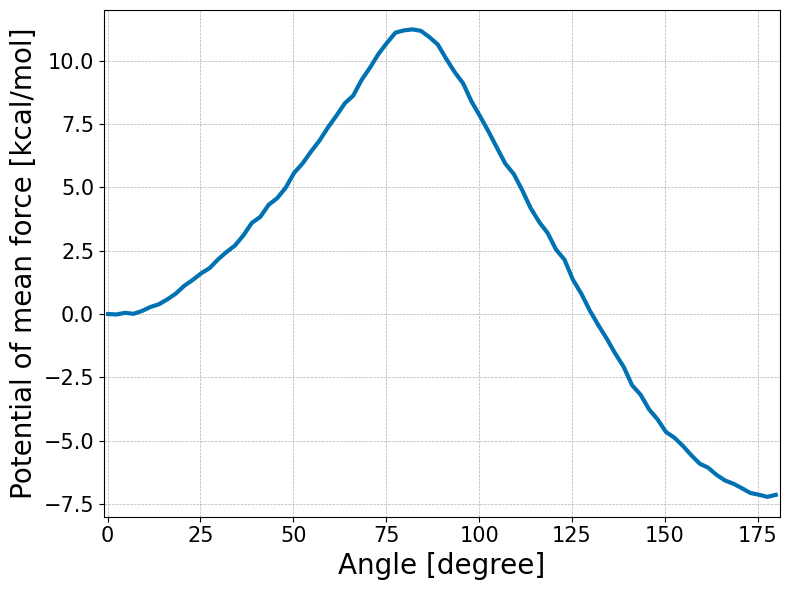

WHAM (Weighted Histogram Analysis Method)
using PyPlot, StatsBase, Printf, DelimitedFiles, MDToolbox
PyPlot.plt.style.use("seaborn-colorblind");
ENV["COLUMNS"] = 110; #display width for MDToolbox# constants
KBT = KB_kcalpermol*300.00.59616123# umbrella window centers
umbrella_center = 0:3:180
K = length(umbrella_center)61# define edges for histogram bin
M = 80; # number of bins
edge = range(-1, stop=181, length=M+1)
#edge = linspace(-1, 181, M+1)
bin_center = 0.5 .* (edge[2:end] .+ edge[1:(end-1)])0.1375:2.275:179.8625# read dihedral angle data
data_k = []
for k = 1:K
filename = @sprintf "data/umbrella_alat/3_prod/run_%d.dat" umbrella_center[k]
x = readdlm(filename);
push!(data_k, x[:, 2])
end# calculate histogram (h_km)
# h_km: histogram (data counts) of k-th umbrella data counts in m-th data bin
h_km = zeros(Int64, K, M)
for k = 1:K
h = fit(Histogram, data_k[k], edge)
h_m = h.weights
h_km[k, :] = h_m
end# bias-energy
# bias_km: bias-factor of k-th umbrella-window evaluated at m-th bin-center
function minimum_image(center, x)
dx = x .- center
dx = dx .- round.(dx./360.0).*360.0;
dx
end
bias_km = zeros(Float64, K, M)
spring_constant = 200.0 * (pi/180.0)^2; # conversion of the unit from kcal/mol/rad^2 to kcal/mol/deg^2
for k = 1:K
for m = 1:M
#bias_km[k, m] = (spring_constant./KBT) * (minimum_image(Float64(umbrella_center[k]), bin_center[m])).^2
bias_km[k, m] = (spring_constant./KBT) * (Float64(umbrella_center[k]) - bin_center[m]).^2
end
end# solve WHAM equations, and
# calculate probabilities in the dihedral angle space, and evaluate the potential of mean force (PMF)
f_k, pmf_m = wham(h_km, bias_km)
pmf_m = KBT .* pmf_m;
pmf_m = pmf_m .- pmf_m[1]1×80 Matrix{Float64}:
0.0 -0.0169813 0.0474963 0.00841217 0.119576 … -6.87585 -7.06385 -7.13125 -7.21599 -7.13709using JLD2
@save "wham.jld2" bin_center pmf_mfig, ax = subplots(figsize=(8, 6))
ax.plot(bin_center, pmf_m[:], linewidth=3)
xlabel("Angle [degree]",fontsize=20)
ylabel("Potential of mean force [kcal/mol]",fontsize=20)
# detailed options (if your prefer to change details)
ax.set(xlim=[-1, 181], ylim=[-8, 12])
ax.xaxis.set_tick_params(which="major",labelsize=15)
ax.yaxis.set_tick_params(which="major",labelsize=15)
ax.grid(linestyle="--", linewidth=0.5)
tight_layout()
savefig("wham.png", dpi=350)